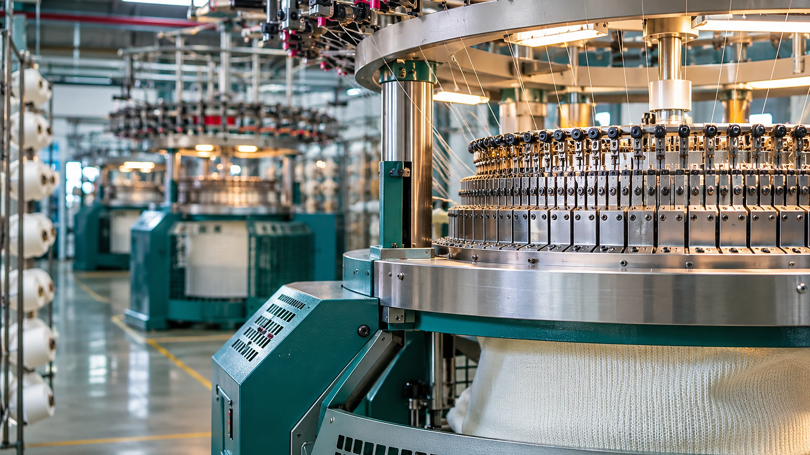
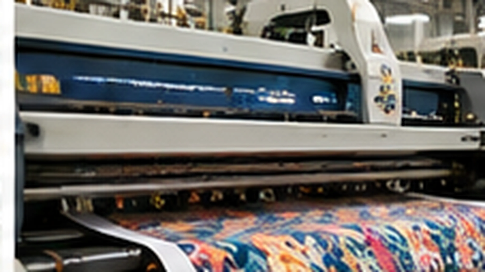
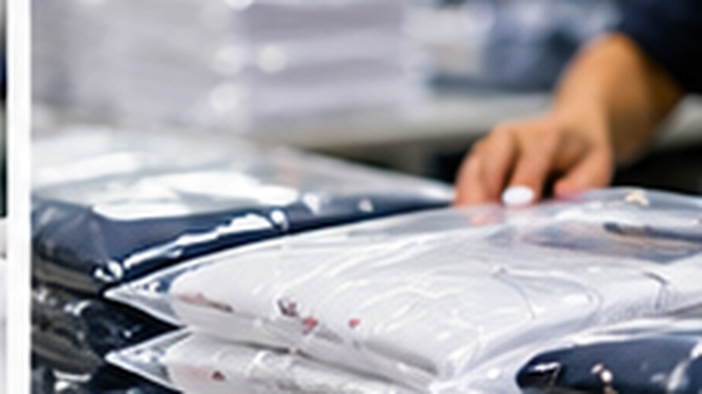

Knitting
Fabric formation and early-stage textile processes.
A closer look at the facilities and people supporting IZON’s end-to-end approach.

Explore the six core areas highlighted in the company profile.

Fabric formation and early-stage textile processes.
Fabric colouring and finishing processes.

Printed fabric design and surface treatment.
Stitching and apparel production activity.
Garment inspection and quality review.

Final preparation of garments for dispatch.
Care in every stage.
Connected production processes.
Commitment through delivery.